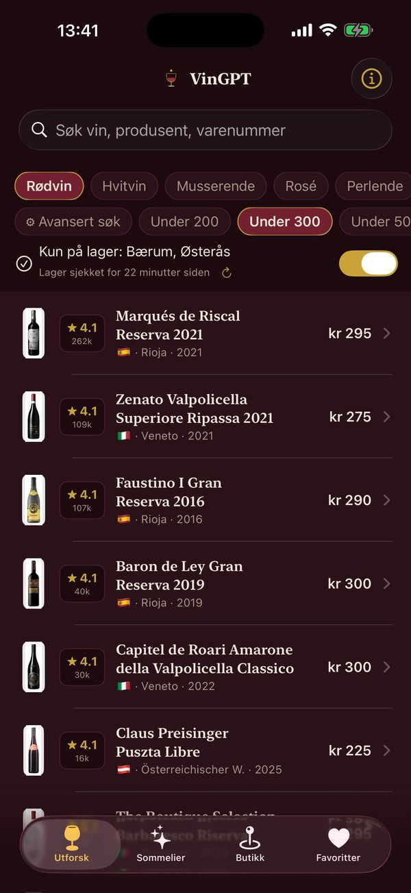
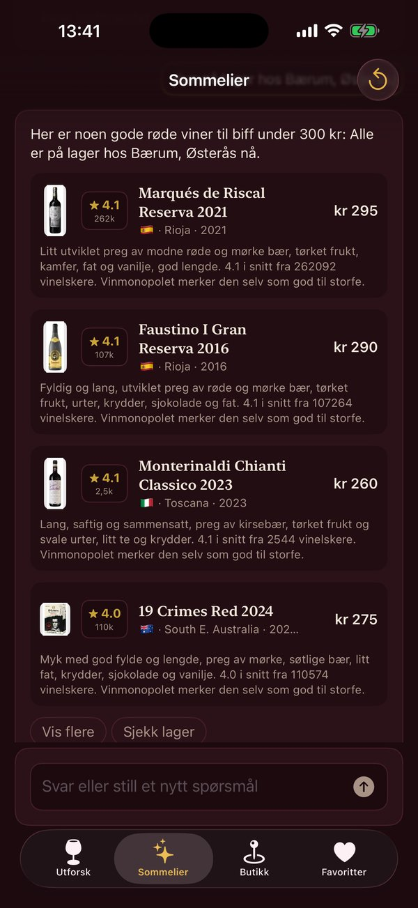
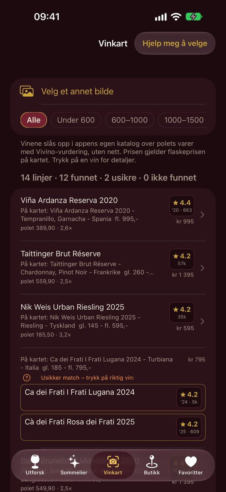
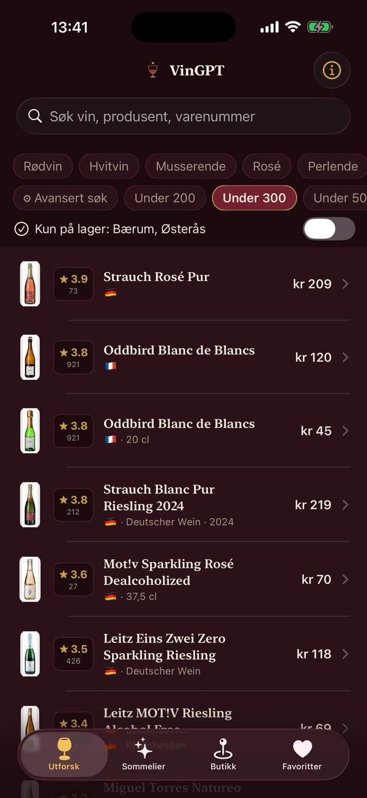

VinGPT
Hva er den beste vinen din polbutikk har inne?
Velg din Vinmonopol-butikk og se alt som står på hylla, rangert etter vurderinger fra tusenvis av andre vinelskere. Spør på vanlig norsk: «rødvin til lam under 250 kr». På restauranten: ta bilde av vinkartet.
Hent i App StoreiPhone med iOS 17 eller nyere · sommelieren krever Apple Intelligence
- Hele butikkutvalget
- Flasketall live
- Ingen konto
- Norsk
- Uavhengig av Vinmonopolet
- Også i Sverige
Hva kan VinGPT hjelpe med?
Hylla i din butikk, rangert
Ikke hele Norge: det som står i butikken du faktisk går til, sortert etter vurdering. Filtrer på pris, vintype, land og hva maten er.
Flasketall live
Trykk «Sjekk lager» og se hvor mange flasker butikken har akkurat nå. Utsolgt? Appen viser nærmeste butikk som har den.
Spør sommelieren
«Noe godt til taco under 200?» Svaret er viner som står i din butikk, med begrunnelse per flaske. Kjører på telefonen, ingenting sendes bort.
Skann vinkartet
Ta bilde av vinkartet på restauranten og se vinene rangert innenfor det du vil betale. Bildet leses på telefonen.
Alkoholfritt, sortert på farge
Rødt, hvitt, rosé og bobler uten alkohol, rangert som alt annet. Slå på bryteren i avansert søk.
Favoritter uten konto
Merk viner du vil huske. De følger din egen iCloud til neste telefon, uten innlogging.
Slik fungerer det
- Velg butikk. Den du handler i, eller den nærmeste nå.
- Se hylla rangert. Topp ti først, resten på «Vis flere». Filtrer på pris og type.
- Spør eller skann. Still et spørsmål til sommelieren, eller ta bilde av vinkartet.
Se appen




Vanlige spørsmål
Hvor kommer vurderingene fra?
Fra tusenvis av vanlige vindrikkere som har gitt vinen en karakter, ikke fra én anmelder. Appen viser snittet og hvor mange som står bak det, og viser aldri et tall den ikke har.
Hvorfor viser appen en annen beholdning enn butikken har?
Lagerlisten («hvilke varer fører butikken») caches i inntil ett døgn og merkes med når den sist ble sjekket. Flasketall hentes derimot alltid live når du trykker «Sjekk lager» på en vin. Dra ned i listen for å oppdatere hele lagerlisten.
Hvorfor mangler en vin vurdering?
Vurderinger finnes for de mest omsatte vinene i butikkutvalget. Viner i bestillingsutvalget og helt ferske årganger kan mangle — appen viser da «Ingen vurdering funnet» i stedet for å gjette.
Sommelieren svarte rart eller feil
Sommelieren kjører på Apples språkmodell på telefonen (krever iPhone 15 Pro eller nyere med Apple Intelligence). Den kan kun anbefale varer som faktisk finnes i sortimentet, og begrunnelsene ved hver vin kommer fra Vinmonopolets egne beskrivelser. Blir et svar likevel feil, trykk tommel ned og fortell hva som var galt — det hjelper oss mye.
Krever appen konto?
Nei. Ingen innlogging, ingen registrering. Favoritter følger din egen iCloud automatisk.
Er VinGPT en del av Vinmonopolet?
Nei. VinGPT er en uavhengig app uten tilknytning til Vinmonopolet. Appen selger ikke alkohol og har ingen kjøpsfunksjon.
Finnes appen i Sverige?
Ja, med Systembolagets butikker: VinGPT för Sverige.
Utgiver
VinGPT utgis av Siphon AS (org.nr. 998 610 672), Jacob Aalls gate 14A, 0368 Oslo.
Kontakt
Tilbakemeldinger og feilrapporter:
support.vingpt@vingpt.no
(eller bruk «Send tilbakemelding» i appen — da følger versjon og katalogdato
med automatisk).